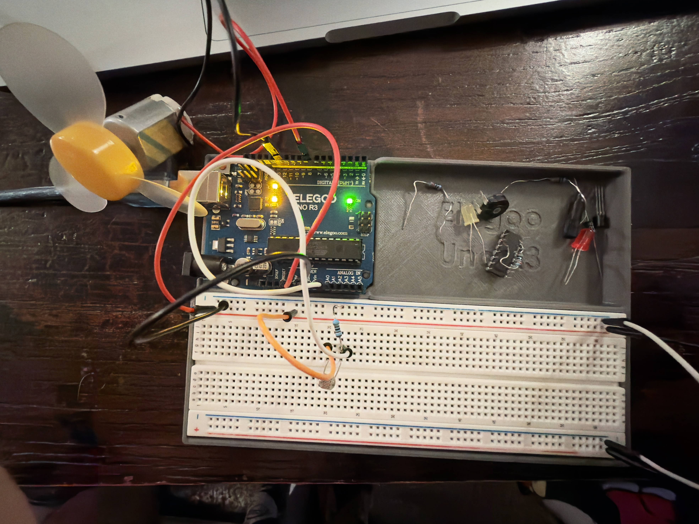

Overview
This project demonstrates input–output control using a photoresistor (light sensor) and a DC fan. The sensor forms a voltage divider connected to A0, providing analog readings that vary with light intensity. These readings are mapped to control the fan’s behavior through PWM signals. The documentation includes the schematic, circuit photo, code, operation GIF, Serial Monitor data, voltage calculations, and responses to the required questions.
Schematic (show values & calculation)

Upload your schematic image here. In the caption, explain the sensor’s voltage‑divider values (e.g., 10 kΩ fixed), and show expected node voltages (min/mid/max) and their ADC equivalents.
Breadboard Circuit

This is my A3 circuit: a photoresistor (light sensor) connected as a voltage divider into A0, and a DC fan connected to digital pins 8 and 12 for direction control. As light increases, the LDR’s resistance drops, increasing A0 voltage and triggering the fan to spin. The wiring matches the schematic and shares a common ground with the Arduino.
Firmware Code
// Sensor: LDR (photoresistor) in a voltage divider
// Output: Fan controlled by two digital pins (8 and 12)
// Create a variable to store the sensor reading from A0
int sensorValue = 0;
// Variable placeholders
int voltage;
int timer = millis(); // holds startup time, not used directly
void setup()
{
// Set A0 as an input to read the voltage divider from the LDR
pinMode(A0, INPUT);
// Start Serial Monitor at 9600 baud for logging and screenshots
Serial.begin(9600);
// Configure D9 as a PWM output (for test LED brightness)
pinMode(9, OUTPUT);
// Configure fan control pins (8 and 12) as outputs
pinMode(12, OUTPUT);
pinMode(8, OUTPUT);
// Ensure the fan is stopped when the Arduino first powers up
digitalWrite(8, LOW);
digitalWrite(12, LOW);
}
void loop()
{
// Read the analog value (0–1023) from the LDR voltage divider
sensorValue = analogRead(A0);
// Print the sensor value with a unique label for Serial Monitor
Serial.print("LDR=");
Serial.println(sensorValue);
// Map the 10-bit sensor range (0–1023) to 8-bit PWM (0–255)
// This controls the brightness of the LED on D9
analogWrite(9, map(sensorValue, 0, 1023, 0, 255));
// If light is above threshold (~200), spin fan in reverse direction
if (sensorValue > 200){
// Drive D12 HIGH and D8 LOW to reverse motor polarity
digitalWrite(8, LOW); // one side of the motor LOW
digitalWrite(12, HIGH); // the other side HIGH
}
// Otherwise, keep both pins LOW so the fan stays off
else{
// Set both control pins LOW to stop the fan
digitalWrite(8, LOW);
digitalWrite(12, LOW);
}
// Short delay (100 ms) to stabilize readings and Serial output
delay(100);
}
Operation GIF & Serial Screenshot

This GIF shows the A3 circuit in action: when light increases on the photoresistor, the fan activates and spins, and when it’s darker, the fan stops.
Additional Questions (A3)
-
1) In your voltage divider, can the variable resistor be either R1 or R2?
[Write your answer here. Hint: yes—math is the same, polarity flips. Include a short numeric example for each orientation.]
-
2) Plot Vmeasure vs Time from your GIF.
[Write your answer here. Hint: log millis(),ADC to CSV; convert V = 5·ADC/1023; paste/import into Sheets and add axes labels.]
-
3) If PWM were 10‑bit and ADC 16‑bit, how would map() change?
[Write your answer here. Hint: map(raw16, 0, 65535, 0, 1023) and note smoother control.]
Reflection
[[Write a short reflection here (4–6 sentences): what worked, what you changed after testing, and what you’d do next time.]]